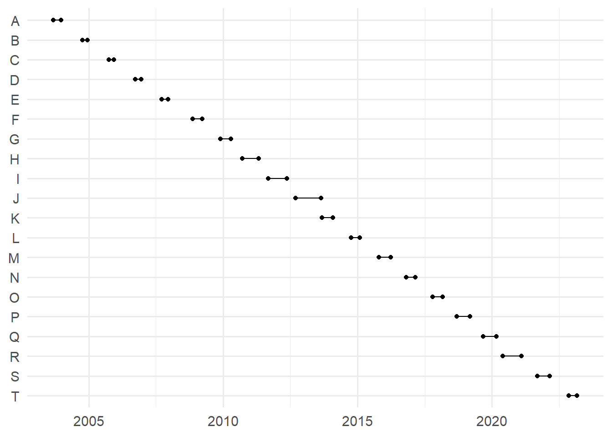
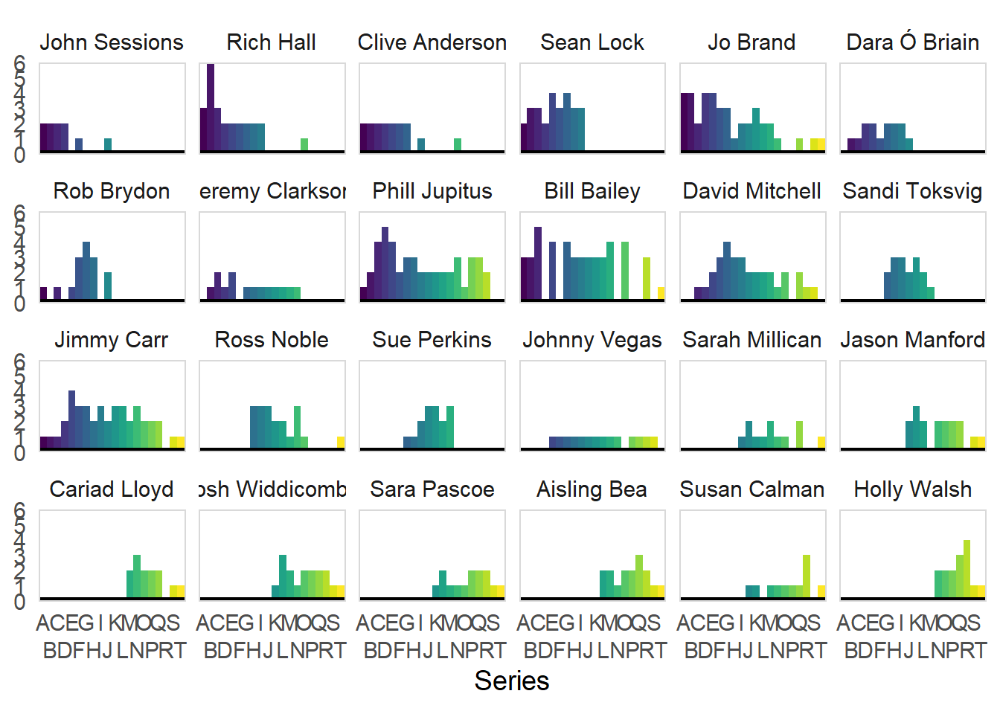

```{r}
library(rvest)
library(tidyverse)
theme_set(theme_minimal(base_size = 14))
# get all tables from wikipedia
tbls <-
read_html("https://en.wikipedia.org/wiki/List_of_QI_episodes") %>%
html_table()
```Introduction
For those not au fait with the British comedy scene, one of our key comedic exports is the panel show. These typically take the form of four to six comedians sat in a studio, nominally competing in a game which is mainly a vehicle for telling jokes. One of our longest running panel shows is QI, short for “Quite Interesting”, in which Sandi Toksvig (formerly Stephen Fry) quizzes four comedians (one of which is always Alan Davies) on obscure and often impossible trivia, where points are awarded for being interesting and docked for being obvious or predictable.
To me, an interesting thing about long-running panel shows is that they effectively track the popularity of various comedians and guests. As QI has been on since 2003, re-watching the earliest series really gives you that “Oh, them! Whatever happened to them?” reaction. Like the proverbial frog in the incrementally boiling pot of water, celebrities and comedians can lose popularity (or just retire) so gradually that you just don’t notice as its happening.
This blog post scrapes a load of QI data from Wikipedia to see if we can track the popularity of different comedians, at least in reference to their appearances on QI. I’m curious as to whether there is a clearly defined “old guard” (the likes, perhaps, of Clive Anderson and John Sessions) and “new guard” (your Aisling Beas and Josh Widdicombes), or whether things are much more murky.
Scraping
We’ll start by loading packages and scraping all the tables from Wikipedia’s list of QI epsiodes.
The first table is a sort of “meta-table” of all of the different series. Those unfamiliar with QI will note that the series are labelled with letters rather than numbers, as the trivia topics are themed around each letter. There are some specials related to annual televised charity events in the UK (Sports Relief, Comic Relief, etc.).
```{r}
tbls[[1]]
```# A tibble: 25 × 5
Series Episodes Episodes `Originally aired` `Originally aired`
<chr> <chr> <chr> <chr> <chr>
1 Series Episodes Episodes First aired Last aired
2 Pilot Pilot Pilot Unaired Unaired
3 A 12 12 11 September 2003 (2003-09-11) 23 December 2003 (20…
4 B 12 12 8 October 2004 (2004-10-08) 17 December 2004 (20…
5 C 12 12 30 September 2005 (2005-09-30) 9 December 2005 (200…
6 D 13 13 29 September 2006 (2006-09-29) 15 December 2006 (20…
7 E 13 13 21 September 2007 (2007-09-21) 14 December 2007 (20…
8 F 12 12 14 November 2008 (2008-11-14) 21 March 2009 (2009-…
9 G 18 18 26 November 2009 (2009-11-26) 16 April 2010 (2010-…
10 H 18 18 17 September 2010 (2010-09-17) 2 May 2011 (2011-05-…
# ℹ 15 more rowsWe’ll need to tidy this up a bit - there’s a repeat column, the column names are annoying, and the air dates aren’t formatted as dates. We can use stringr::str_extract(), a bit of REGEX, and lubridate to sort out this latter issue.
```{r}
# meta info about series
meta <-
# drop duplicated column
tbls[[1]][c(1, 3, 4, 5)] %>%
# remove repeat row
janitor::row_to_names(1) %>%
# nicer names
janitor::clean_names() %>%
mutate(
# add episode number to specials
episodes = if_else(!series %in% LETTERS, 1L, as.integer(episodes)),
# format dates properly
across(
ends_with("aired"),
\(x) str_extract(x, "\\d{4}-\\d{2}-\\d{2}") %>% ymd()
),
# series to factor
series = fct_inorder(series)
)
glimpse(meta)
```Rows: 24
Columns: 4
$ series <fct> Pilot, A, B, C, D, E, F, G, H, Comic Relief, I, Sport Reli…
$ episodes <int> 1, 12, 12, 12, 13, 13, 12, 18, 18, 1, 18, 1, 18, 18, 18, 1…
$ first_aired <date> NA, 2003-09-11, 2004-10-08, 2005-09-30, 2006-09-29, 2007-…
$ last_aired <date> NA, 2003-12-23, 2004-12-17, 2005-12-09, 2006-12-15, 2007-…If we’d like to, we can now visualise the series as in Figure 1.
```{r}
#| label: fig-qiseries
#| fig-cap: "The original duration of all non-special series of QI"
meta %>%
filter(series %in% LETTERS) %>%
mutate(series = fct_rev(series)) %>%
ggplot(aes(y = series, yend = series, x = first_aired, xend = last_aired)) +
geom_segment() +
geom_point() +
geom_point(aes(x = last_aired)) +
labs(x = NULL, y = NULL)
```
Now the real interesting parts are in tables 2 through 25. These contain a load of information relating to the individual episodes; the title, the guests, who won, and so on. We’ll purrr::map() over these tables to make them easy to bind together and then combine them into a single tibble.
```{r}
# bind data together
raw <-
tbls[2:25] %>%
# make everything a character column for binding, rename "viewers" consistently
map(~ mutate(.x, across(everything(), as.character)) %>%
rename_with(.fn = \(x) if_else(str_detect(x, "Viewers"), "Viewers", x))) %>%
# add series name
map2(meta$series, ~ mutate(.x, series = .y, .before = everything())) %>%
# bind
bind_rows() %>%
# format NA properly
mutate(across(everything(), ~ if_else(str_detect(.x, "N/A"), NA, .x))) %>%
# nicer names
janitor::clean_names()
glimpse(raw[-1,])
```Rows: 325
Columns: 8
$ series <fct> A, A, A, A, A, A, A, A, A, A, A, A, B, B, B, B, B, B…
$ no_overall <chr> "1", "2", "3", "4", "5", "6", "7", "8", "9", "10", "…
$ no_in_series <chr> "1", "2", "3", "4", "5", "6", "7", "8", "9", "10", "…
$ title <chr> "\"Adam\"", "\"Astronomy\"", "\"Aquatic Animals\"", …
$ guests <chr> "Danny Baker\nHugh Laurie\nJohn Sessions", "Bill Bai…
$ winner_s <chr> "Danny Baker", "Rich Hall and Jeremy Hardy", "Clive …
$ original_air_date <chr> "11 September 2003 (2003-09-11)", "18 September 2003…
$ viewers <chr> "3.20", "2.16 (BBC2)+ 0.20 (BBC4)", "2.46 (BBC2)+ 0.…There’s a few things to sort out here:
Some of the names look rubbish (e.g.,
winner_s)Some of the Wikipedia cross-references (e.g.,
"[fn 2]") are polluting the character columns.The guests and winners are provided as single strings (e.g.,
"Danny Baker\nHugh Laurie\nJohn Sessions") which will make them harder to work with.Something really dodgy is going on with the Pilot, which we’ll deal with manually.
The viewers column is in a bit of a state too, combining different versions of the same episode on different channels in inconsistent ways. We’ll just drop it as we don’t need it today.
```{r}
clean <-
mutate(
# rename winners
rename(raw, winners = winner_s),
# set episode #s as integers
across(no_overall:no_in_series, as.integer),
# get rid of dodgy chars in titles
title = str_remove_all(title, '\\"') %>%
str_remove_all("\\[fn \\d+\\]"),
winners = str_remove_all(winners, '\\"') %>%
str_remove_all("\\[fn \\d+\\]"),
# split guests/winners into list cols
guests = str_split(guests, pattern = "\n"),
winners = str_split(winners, pattern = " and "),
# format date
original_air_date = str_extract(original_air_date, "\\d{4}-\\d{2}-\\d{2}") %>% ymd()
) %>%
# drop viewers col
select(-viewers)
clean$guests[[1]] <- clean$guests[[1]][2:4]
```Our clean data can be viewed in Figure 2, where each series can be expanded and collapsed to read more.
```{r}
#| label: fig-react
#| fig-cap: "The clean QI guests dataset"
clean %>%
set_names(c("Series", "# Overall", "# in Series", "Title", "Guests", "Winner(s)", "Air Date")) %>%
reactable::reactable(groupBy = c("Series"), pagination = F)
```Analysis
Now we have some clean data, lets get the top 24 guests who have ever appeared on QI. If you’re familiar with UK comedy, you’ll see some more recently popular comedians on there (e.g., Cariad LLoyd), some older names (e.g., John Sessions), and some that have been around forever (e.g., Phil Jupitus).
```{r}
unnested_guests <- unnest(clean, guests)
top_guests <-
unnested_guests %>%
count(guests, sort = TRUE) %>%
drop_na() %>%
slice_head(n = 24)
as.character(str_glue("{top_guests$guests} ({top_guests$n})"))
``` [1] "Bill Bailey (47)" "Phill Jupitus (46)" "Jimmy Carr (42)"
[4] "Jo Brand (42)" "David Mitchell (32)" "Sean Lock (27)"
[7] "Rich Hall (25)" "Ross Noble (19)" "Jason Manford (17)"
[10] "Josh Widdicombe (17)" "Sandi Toksvig (17)" "Aisling Bea (16)"
[13] "Clive Anderson (16)" "Sue Perkins (16)" "Holly Walsh (15)"
[16] "Rob Brydon (15)" "Dara Ó Briain (14)" "Jeremy Clarkson (14)"
[19] "Johnny Vegas (14)" "Sara Pascoe (14)" "Cariad Lloyd (13)"
[22] "Sarah Millican (12)" "Susan Calman (11)" "John Sessions (10)" So, time for the main event! Figure 3 shows the distributions of the appearances of the top 24 QI guests. Some interesting things to note:
There is a clear “old guard” - the likes of John Sessions, Rich Hall, Clive Anderson, Sean Lock, Dara O’Briain, and Rob Brydon. This is not to say that all of these comedians fell out of popularity, however - Rob, Dara and Sean (up until his passing) especially remain popular TV comics.
Equally, there is a “new guard” of comics who became popular more recently, including Josh Widdicombe, Cariad Lloyd, Sara Pascoe, and Aisling Bea.
There is a third category, one could call an “evergreen” guest, that has been around for the long haul. This category includes guests like Phil Jupitus, Bill Bailey, David Mitchell and Jimmy Carr.
Some interesting individuals include:
Jo Brand, who was on very often originally, but whose appearances have descreased over time.
Jeremy Clarkson, who isn’t really a comedian but exists is comedian-adjacent in being quick/entertaining enough to
```{r}
#| label: fig-qihist
#| fig-cap: "Histograms showing the distribution of appearances of the top 24 most common QI guest comedians."
#| column: body-outset-right
hist_data <-
unnested_guests %>%
filter(guests %in% top_guests$guests,
series %in% LETTERS) %>%
mutate(guests = forcats::fct_reorder(guests, original_air_date, .na_rm = TRUE)) %>%
count(guest = guests, series)
hist_data %>%
ggplot(aes(x = series, y = n)) +
geom_col(aes(fill = series), width = 1) +
facet_wrap(vars(guest), nrow = 4) +
theme_minimal(base_size = 14) +
theme(
panel.border = element_rect(fill = NA, color = "grey85"),
panel.grid = element_blank(),
aspect.ratio = 1/1.6,
legend.position = "none"
) +
geom_hline(yintercept = 0, linewidth = 2) +
scale_fill_viridis_d(option = "viridis") +
scale_y_continuous(expand = expansion()) +
scale_x_discrete(guide = guide_axis(n.dodge = 2)) +
labs(x = "Series", y = NULL)
```